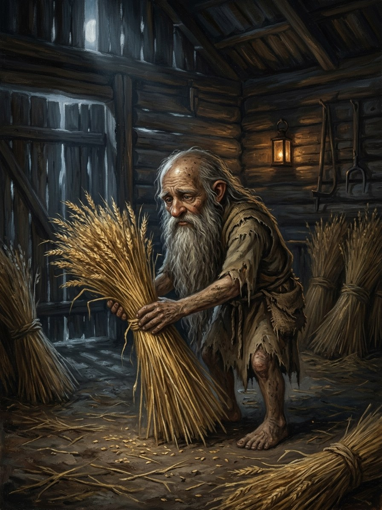

Kaukas / barzdukai (field-luck)¶
Folk source [Historical record]¶
Small (thumb- to knee-high), often bearded household and field spirits (the barzdukai, “little beards”). A kaukas brings grain and plenty, usually by multiplying what is already there rather than stealing, and must be fed. Giving it clothes makes it leave. Named with aitvarai in 16th-century church writings; in some regions kaukai are the souls of unbaptised infants. Folklorists draw the line this way: the aitvaras brings from elsewhere, the kaukas increases what is here. Regional variants differ widely.
Kaukas / barzdukai (field-luck)

Kaukas / barzdukai (field-luck) · creature¶
Type |
creature |
Status |
The saga’s invention |
Note |
Bestiary §3. Danger I → III. |
In the saga (where the folk are half-wrong)¶
The kaukai are the unnamed dead: infants who died before their mother spoke their secret name (see magic rules §6). With no name they cannot climb the Glass Mountain, so Žemyna keeps them in the soil to tend the fields. “Unbaptised” is a distorted memory of “unnamed”. A kaukas is a family’s own dead child working the family’s field; most families half know it and never say it. Folk often confuse them with the barstukai, which is useful in fiction.
Signs & habitat¶
A grain-bin that stays fuller than it should; tiny footprints in flour; the threshing floor and granary corners.
Before / after the Unbinding¶
Before: they tend and multiply, asking porridge and a place. After: with no courtesy owed, the unnamed dead turn hungry and eat the grain they once multiplied; granaries rot from the inside.
Banes, wards, bargains, and their cost¶
Porridge on the threshing floor at harvest (minimal cost, which is why the bargain lasted). Giving clothes is, in the saga, a funeral: a clothed kaukas is released to climb, and the field’s luck goes with it. A mother may speak a name over the threshing floor and burn a lock of her hair; the kaukas goes up to Dausos, and she loses the memory of that child’s face (Law of Balance).
Danger level¶
I nuisance → III dangerous.
Story hooks¶
Books III–V: a Samogitian widow names her three kaukai one after another as the Hidden Groves fall, choosing her children’s peace over her family’s bread.
Relations
Servant of: Žemyna — The unnamed dead, kept in the soil to tend the fields.
Origin [Historical record] small bearded household and field spirit (barzdukai), named with aitvarai in 16th-century church writings · [The saga's invention] the unnamed dead
Tier Dvasia · kept in the soil by Žemyna
Danger I nuisance → III dangerous after 1387
Habitat Under the threshing floor and in granary corners
Wants Porridge on the threshing floor at harvest, and a place
Takes Nothing at first. After 1387, the grain it once multiplied
Signs A grain-bin that stays fuller than it should; tiny footprints in flour
Banes Clothes (a funeral: it is released to climb); a mother naming it
Half-wrong truth. The folk say unbaptised infants. The truth is unnamed: babies who died before their mother spoke the secret name cannot climb the Glass Mountain, so Žemyna keeps them in the soil to tend the fields. A kaukas is the family's own dead child working the family's field.
Barzdukai. The folk nickname, often misapplied to the barstukai. A peasant leaving porridge for the barzdukai may be feeding the wrong creature.
Multiplying. Increases what is already there instead of stealing.
Hunger (after 1387). With no courtesy owed, the unnamed dead eat the grain they once multiplied. Granaries rot from the inside.
Naming it. The mother speaks a name over the threshing floor and burns a lock of her hair. The kaukas goes up to Dausos, and she loses the memory of that child's face (Law of Balance).
Clothing it. The field's luck goes with it.
Connections¶
graph LR
kaukas["Kaukas / barzdukai (field-luck)"]
zemyna["Žemyna"]
kaukas -->|Servant of| zemyna
style kaukas stroke-width:3px